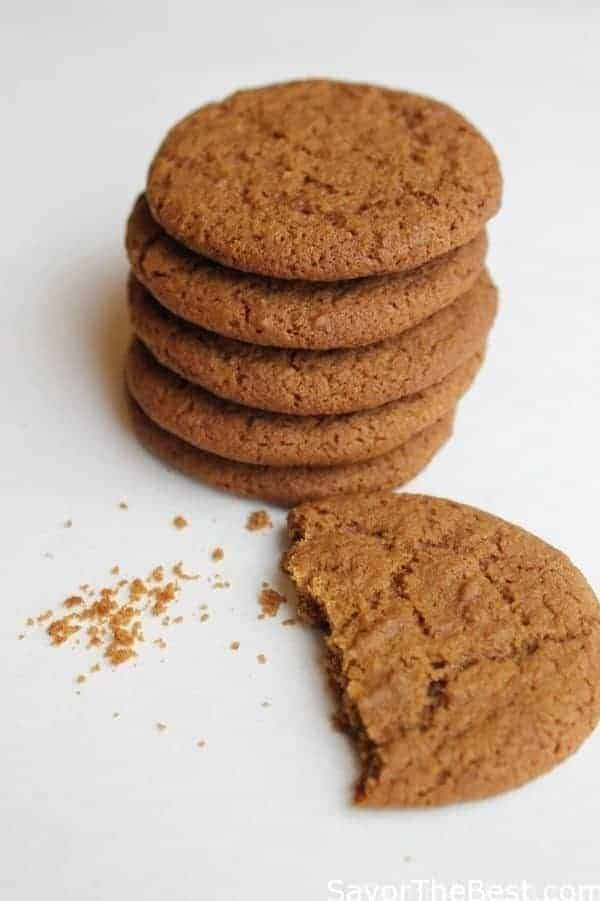

Gingersnap Cookie Recipe

Gingersnap Cookies
Gingersnap cookies are a delicious treat. This recipe will help you make soft, chewy gingersnap cookies!
Tip: If you want your cookies to stay soft place them on a piece ofwhite bread. This will help your cookies last for days.
Ingredients
- Two cups of all-purpose flour
- One tablespoon ground ginger
- Two teaspoons of baking soda
- One teaspoon ground cinnamon
- One-half teaspoon salt
- Three-fourths cup shortening
- One cup white sugar
- One Egg
- One-fourth cup dark molasses
- One-third cup cinnamon sugar
Steps
- Preheat oven to 350 degrees
- Sift flour, ginger, baking soda, cinnamon, and salt into a mixing bowl
- Beat egg in dark molasses until light and fluffy
- Pinch and roll dough into 1-inch-diameter balls. Roll each ball into cinnamon sugar, then place two inches apart on baking pan
- Bake in preheated oven until tops are cracked, about ten minutes
- Allow cookies to cool on a wire rack
- Store in an airtight container